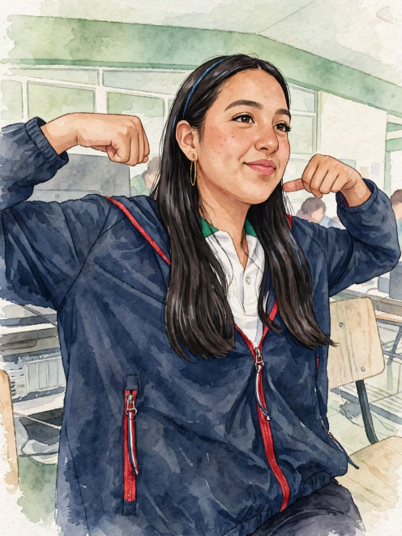
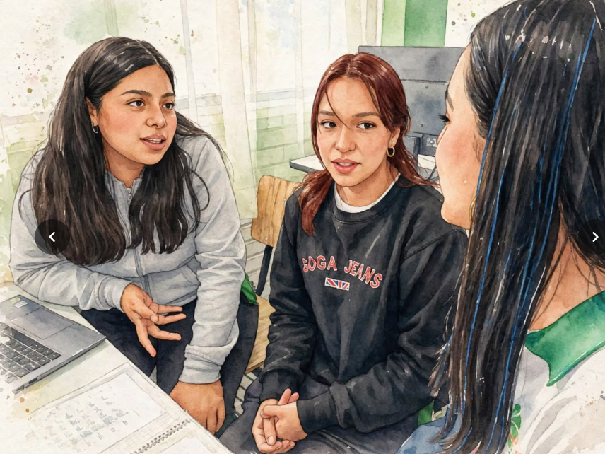
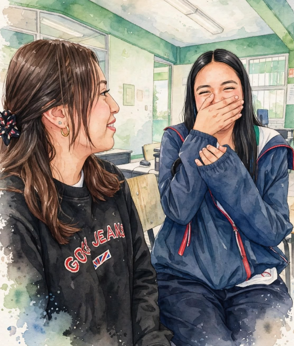

Falta de descanso
Puede provocar cansancio, dificultad para concentrarse e irritabilidad.
Identificar, analizar y comprender para comenzar a cambiar.
Reconocer cómo se encuentra mi bienestar físico y emocional.

Para conocer mi bienestar físico puedo reflexionar sobre mis hábitos de descanso, alimentación, higiene y actividad física.
También es importante reconocer cómo me siento, cómo expreso mis emociones y qué hago cuando experimento preocupación, estrés o frustración.
Selecciona la opción que mejor describa cada aspecto.
Identificar hábitos o situaciones que pueden afectar mi bienestar físico y emocional.

En este proyecto, un bug representa un hábito o situación que puede afectar mi salud o mi equilibrio emocional. Reconocerlo permite comprender qué necesito cambiar.
Puede provocar cansancio, dificultad para concentrarse e irritabilidad.
La falta de movimiento puede afectar la condición física y la salud.
Puede generar preocupación, tensión y dificultades para realizar actividades.
Puede dificultar la comunicación y la búsqueda de apoyo.
Puede afectar la energía y el funcionamiento del organismo.
Puede provocar que se ignoren necesidades físicas y emocionales.
Reconocer un hábito que necesito mejorar no significa que haya fracasado. Significa que puedo aprender y tomar decisiones para cuidar mi salud.
Comprender cómo los hábitos y las situaciones influyen en mi vida.

| Situación | Área afectada | Posible consecuencia |
|---|---|---|
| Descansar poco | Física y emocional | Cansancio, irritabilidad y dificultad para concentrarse. |
| No realizar actividad física | Física | Menor condición física y energía. |
| Estrés frecuente | Emocional y física | Tensión y preocupación. |
| No expresar lo que siento | Emocional | Dificultad para comunicar necesidades y pedir apoyo. |
| Descuidar la alimentación | Física | Falta de energía y dificultades para mantener hábitos saludables. |
El bienestar físico y emocional se influyen mutuamente. Por ejemplo, una rutina de descanso adecuada puede favorecer el estado de ánimo, mientras que aprender a manejar el estrés puede ayudar a cuidar el cuerpo y mantener hábitos saludables.
Identificar mis hábitos y reconocer sus consecuencias me permite saber qué aspectos de mi salud física y emocional necesitan atención.